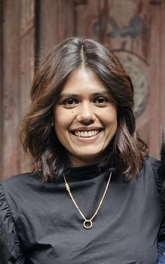

I help startups and scale-ups go to market faster, generate demand, and build the marketing infrastructure that turns early traction into sustainable growth. Healthcare · Fintech · Media.

I'm a full-stack marketing specialist with over a decade of experience across Healthcare, Fintech, and Digital Media. I work at the intersection of strategy and execution — equally at home writing an ABM playbook, standing up a demand gen engine from scratch, or integrating siloed channels into a single omni-channel apparatus.
My background spans both agency and in-house roles, giving me a rare combination of breadth and depth. I've helped early-stage founders articulate their value proposition and find their first customers, helped scale-ups build pipeline-driving infrastructure, and helped enterprise teams turn disconnected marketing efforts into measurable revenue.
Currently consulting with a portfolio of startups across specialty beverage, commercial real estate, content development, and hospitality — helping them craft their GTM strategy and reach critical acquisition milestones.
Built from hands-on experience across both sides of the table — agency precision meets in-house strategic ownership.
Full go-to-market development: positioning, ICP definition, channel mix, launch sequencing, and sales alignment. From zero to launch.
Omni-channel demand gen across paid, organic, events, email, and content — wired together into a single pipeline-driving apparatus.
I design nimble, low-cost pilots to quickly test what's feasible and what actually moves the needle — then use those learnings to build full marketing programs that are scalable, repeatable, and low-lift to run.
Promoter programs, community building, influencer partnerships, and referral loops that turn satisfied customers into a growth channel.
Click any row to expand the full case study.
Owned full Americas GTM for Copper's flagship institutional off-exchange settlement product. Delivered 26% MQL growth QoQ through an integrated omni-channel demand engine.
ClearLoop is Copper's flagship product — a settlement infrastructure that lets institutional investors (hedge funds, asset managers, trading firms) trade across major exchanges like Deribit, Coinbase, OKX, and Bybit while keeping their assets in secure, insured third-party custody at all times. Before ClearLoop, institutions had to move funds into exchange hot wallets, exposing them to counterparty risk and delays. ClearLoop eliminated that entirely: trades settle in under one second on Copper's own infrastructure, with no blockchain network fees and no exposure to exchange insolvency.
ClearLoop was genuinely category-defining — but that made it hard to market. Institutional buyers needed to understand a new settlement paradigm, trust an emerging custodian, and justify the switch from existing workflows. Marketing had to educate, build credibility, and generate pipeline simultaneously, across a fragmented landscape of exchanges, hedge funds, and asset managers in the Americas — all with siloed marketing channels working at cross-purposes.
ClearLoop has become a critical component in helping institutional investors mitigate exchange counterparty risk.
— Copper Client, ClearLoop NetworkLed marketing and communications for the rollout of Gotcare's ITC pilots with Ontario hospitals, in partnership with OBIO and Quinte Health. Authored the ABM playbook and built institutional partnership marketing from the ground up.
Gotcare's "In the Community" (ITC) program is a digital health solution that bridges the gap between hospital discharge and home care for older adults with chronic conditions. Hosted in partnership with Women's College Hospital and supported by OBIO's Early Adopter Health Network, ITC deploys community health ambassadors for in-home visits, AI-enabled health monitoring, and virtual nurse access — all via a personalized tablet. The program targets adults 65+ (or 55–64 with geriatric presentation) managing conditions like hypertension, CHF, COPD, diabetes, and mobility deficits, aiming to reduce hospital readmissions and free up acute care capacity.
Hospital systems are among the most risk-averse buyers in any industry. Gotcare was an early-stage startup asking Ontario hospitals to co-pilot an entirely new care model — one that required buy-in from hospital administrators, primary care physicians, case managers, and nurse navigators simultaneously. There was no playbook. Marketing needed to build institutional trust, create co-branded assets that met the standards of health system partners, and drive referrals through a complex multi-stakeholder funnel.
Gotcare's ITC Program provided great value to their clients. They reported their health ambassador provided emotional support, companionship, and helped with nutrition, transportation, and groceries.
— Dr. Jennifer Shuldiner, Scientist, Women's College HospitalSpotted an untapped base of organic advocates and turned them into a structured, scalable ambassador program — from a scrappy pilot to a global promoter network of ~500 active members.
Through customer data and behavioural signals, it became clear that a substantial portion of satisfied users were already advocating for the product organically — writing Reddit posts, recommending the platform to peers, and talking it up on campus — all without any nudging from the company. The opportunity wasn't to manufacture advocacy. It was to recognize, organize, and amplify what was already happening.
Rather than launching a fully built program into the unknown, the approach was to run a lean pilot with a known group of advocates — test the formats, learn what resonated, then build the infrastructure around proven activity. This kept costs low, validated assumptions quickly, and meant the program that eventually scaled was built on real evidence rather than theory.